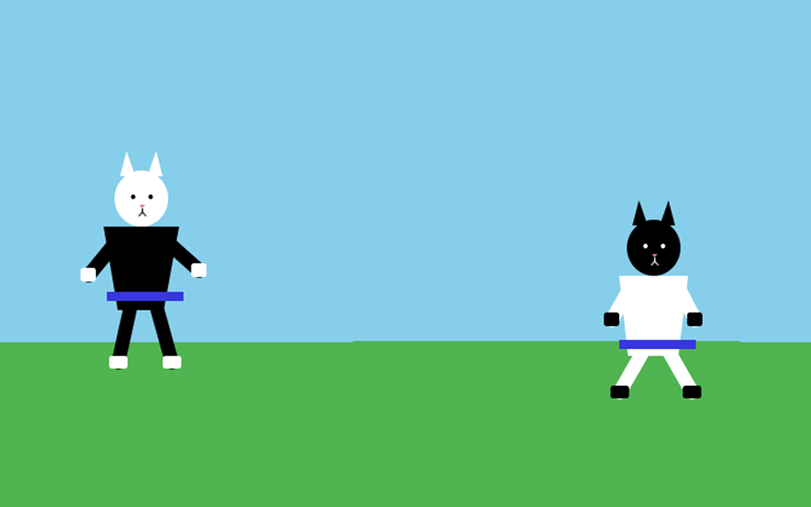

Combate no tatame
Disputa de pegadas, quedas, puxadas para guarda, raspagens, passagens e finalizações.
Dois irmãos, um tatame e muitas possibilidades. Um jogo independente de combate 2D inspirado no jiu-jítsu brasileiro, desenvolvido em Java.
Beta inicial, em desenvolvimento contínuo. A versão pode apresentar bugs e mudanças de jogabilidade.

Uma aventura que começou como experimento em Java.Os Irmãos Miau nasceram como uma experiência de desenvolvimento de jogos. Com o tempo, o projeto cresceu para incluir uma engine própria de combate, animações programáticas e sistemas de luta no chão.
Disputa de pegadas, quedas, puxadas para guarda, raspagens, passagens e finalizações.
Miau Branco e Miau Preto, com opções de personalização, faixas e atributos.
Dois jogadores no mesmo computador e modo de treinamento com situações de prática.
Animação com Java2D, gerenciamento de estados, posicionamento, controles e resolução de combate.
A v0.1.0 é um marco inicial: o jogo já pode ser experimentado, mas continua em construção.
Baixe o pacote, extraia o conteúdo completo e execute o jogo. O Java necessário acompanha a distribuição.
Abrir página de download ↗
Mantenha as pastas app e runtime junto
do executável. Não é necessário instalar Java separadamente.
Algumas capturas do desenvolvimento. Você pode abrir cada imagem em tamanho maior.
Um espaço para reunir vídeos de gameplay, testes de animação e demonstrações das novas mecânicas.
Um registro dos primeiros passos do projeto, apresentando os personagens, as animações e as mecânicas de combate em desenvolvimento.
Mais do que registrar versões: guardar as decisões e as descobertas feitas ao construir o jogo.
Criação dos primeiros personagens, movimentos e animações desenhadas por código, com Java Swing e Java2D.
O projeto ganhou pegadas, posições, transições de solo, sistemas de resistência e recursos para testar as animações e interações.
A primeira versão jogável para Windows foi disponibilizada no GitHub. É o ponto de partida para novas iterações e testes.
Consultar a release ↗Novos registros de implementação, vídeos, capturas, correções e versões serão adicionados aqui à medida que forem homologados.